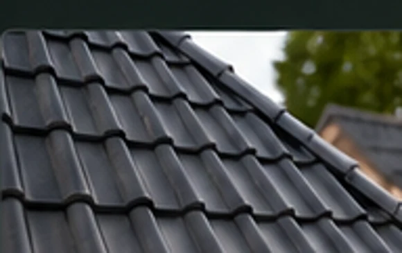
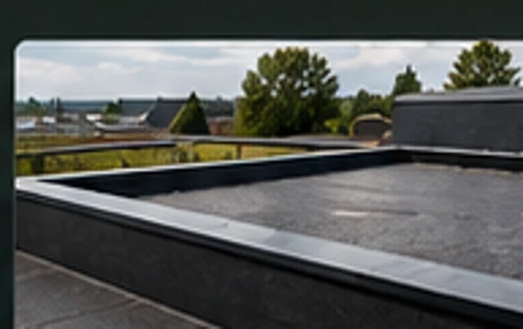
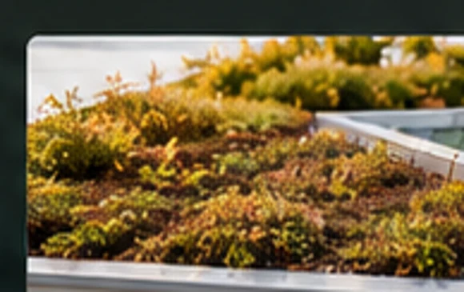
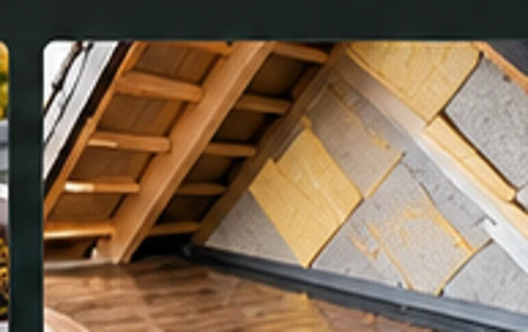
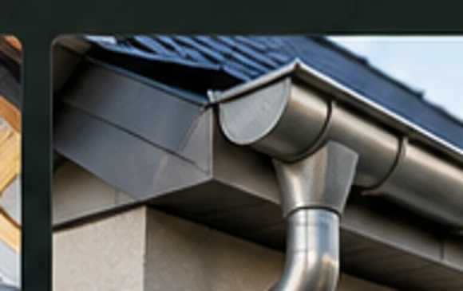
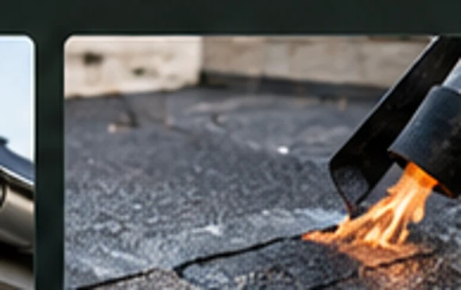
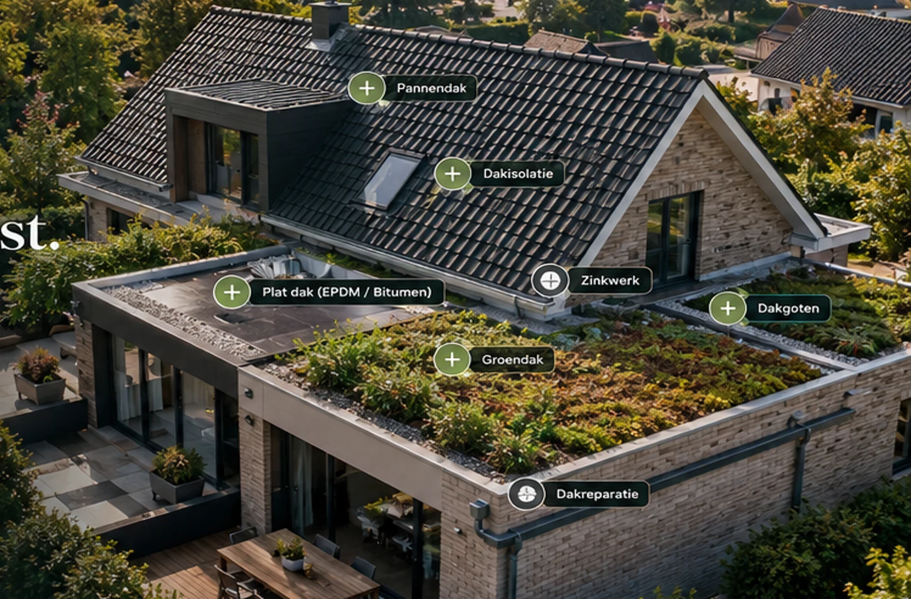

Uw dak.
Vakkundig vernieuwd.
Slim verbeterd.
Van pannendaken en platte daken tot dakisolatie, zinkwerk en groendaken. Eén aanspreekpunt voor advies, renovatie en onderhoud.
Alles voor een goed dak.
Of u nu een lekkage wilt verhelpen, uw dak wilt vernieuwen of uw woning beter wilt isoleren: wij bekijken welke oplossing bij uw dak past.

Pannendaken
Renovatie, herstel en isolatie
↗
Platte daken
Bitumen, EPDM en dakrenovatie
↗
Groendaken
Sedum, waterberging en beplanting
↗
Dakisolatie
Voor pannendaken en platte daken
↗
Dakgoten & zinkwerk
Goten, afvoeren en maatwerk
↗
Dakreparatie
Lekkages, schadeherstel en onderhoud
↗
Een doordachte oplossing voor uw woning.
Een goed dak begint met een goed plan. We kijken naar de staat van de dakbedekking, de afwatering en de mogelijkheden voor isolatie. Als de constructie en dakopbouw geschikt zijn, kan een groendak een waardevolle aanvulling zijn.
Zo krijgt u een helder voorstel waarin noodzakelijk dakwerk en eventuele verbeteringen afzonderlijk worden toegelicht.
Bespreek uw dak →Uw aanvraag
Vertel ons welk dak u heeft en wat u wilt laten uitvoeren.
Inspectie & advies
We beoordelen de situatie en de technische mogelijkheden.
Heldere offerte
U ontvangt een voorstel met de werkzaamheden en opties.
Uitvoering & nazorg
Na uitvoering bespreken we oplevering en passend onderhoud.
Wat kunnen wij voor uw dak betekenen?
Heeft u plannen voor een dakrenovatie, isolatie of groendak? Beschrijf uw situatie. Dan kunnen we gericht meedenken over de mogelijkheden.
Let op: deze website is nog een ontwerp. Het formulier is een demonstratie en verstuurt nog geen aanvragen.